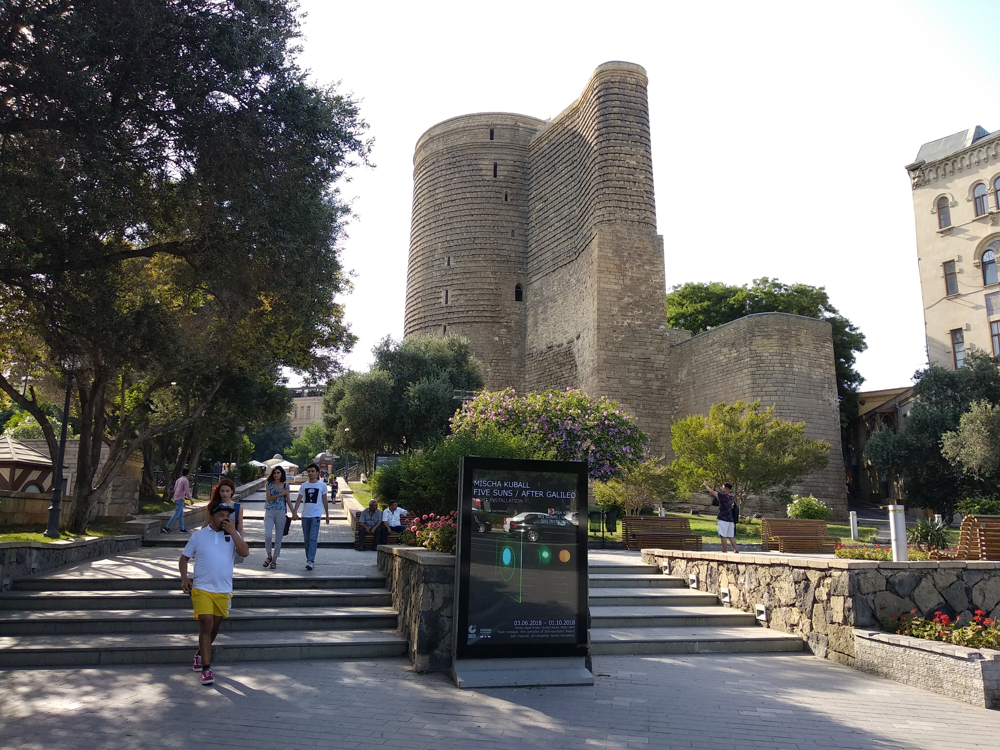

História do país
A partir do século XIX, grande parte do território do Azerbaijão foi incorporada ao Império Russo. Durante esse período, houve uma intensa ocupação da faixa costeira do país, especialmente dos arredores da cidade de Baku, uma vez que ela se tornou a principal e maior fornecedora de combustíveis fósseis para a Rússia. Com o declínio do império e a sua eventual dissolução no ano de 1918, o Azerbaijão experimentou um breve período de independência que teve duração de dois anos apenas.
Em 1920, o país foi incorporado à estrutura territorial da União Soviética, com a denominação República Socialista Soviética do Azerbaijão. Da mesma forma como ocorreu no período precedente, a maior parte do domínio soviético no Azerbaijão foi marcada pela aceleração do processo de urbanização de seu território, com Baku ganhando cada vez mais poder de influência sobre as demais áreas do país e também de industrialização.
Alguns anos antes do fim da União Soviética, mais precisamente em 1988, houve a intensificação do conflito com a Armênia pela governança do enclave de Nagorno-Karabakh. Essa disputa permanece ativa na região até o presente, sendo um dos conflitos em voga na região do Leste Europeu. Em 1991, foi decretado o fim da URSS e a independência das antigas repúblicas, o que inclui o Azerbaijão.
Informações
gerais
Nome oficial: República do Azerbaijão
Gentílico: Azerbaijano
Capital: Baku
População: 10,15 milhões (2021)
Idioma: Língua Azeri
Moeda: Manati Azeri
PIB: 54,62 bilhões USD (2021)
IDH: 0.756

Geografia
O Azerbaijão é localizado entre o Leste Europeu e a Ásia Ocidental, estando situado mais precisamente na região da península do Cáucaso. O território azerbaijano, que não possui saída para o oceano, é banhado pelo mar Cáspio a leste, que, apesar de seu nome, corresponde ao maior lago de água salobra do mundo.
O território do Azerbaijão é constituído também por um enclave denominado Naquichevão, situado a oeste entre a Armênia, a Turquia e o Irã, que corresponde oficialmente a uma república autônoma.
O Azerbaijão estabelece divisas físicas com os seguintes países: Rússia, ao norte, Geórgia, a noroeste, Armênia, a oeste e Irã, ao sul.
Política
O Azerbaijão é uma república presidencialista, que se baseia na separação dos poderes em três: legislativo, executivo e judiciário. A formação estrutural do sistema político foi completada com a adoção da constituição de 12 de novembro de 1955. Onde o presidente da república é o chefe do Poder Executivo, sendo o ocupante do cargo eleito de forma direta para exercer um mandato de 5 anos.
No país, a chefia do governo fica a cargo do primeiro ministro, que é nomeado pelo presidente. Entretanto, o eleito não possui o direito de dissolver a Assembleia Nacional. O poder do estado está limitado pelas leis somente em assuntos internos, porém, para as relações internacionais também há uma regulamentação.
A sede do governo do Azerbaijão fica na cidade de Baku. A Assembleia Nacional corresponde ao poder legislativo, e trata-se de um órgão formado por 125 membros eleitos para exercerem mandatos de cinco anos.O atual presidente do Azerbaijão é o Ilham Aliyev, ao qual foi eleito em 2003 e governa até hoje o seu país.
.jpg)
Cultura
No Azerbaijão a religião predominante é a Islâmica, sendo está praticada por cerca de 97% da população, a maioria deles seguidores da corrente xiita. No entanto, não há uma religião declarada como oficial e as tradições e costumes se diferenciam de pessoa para pessoa e/ou grupo social.
Com a interferência da cultura russa e influência dos persas e turcos, houve grande sequela na estrutura cultural do Azerbaijão. Hoje em dia, cerca de 7,5% da população do país pertence a grupos étnicos minoritários e o restante é de origem Azeri.
A literatura, música e filosofia compõem uma extensa parte da tradição azerbaijana. Além disso, o qobyz, composto por duas cordas é um dos instrumentos populares no Azerbaijão, ainda mais, é muito popular nos países próximos a região. Com isso, Baku, a capital do país, é considerada o centro cultural da nação por possuir inúmeros museus, teatros e livrarias.
Pontos
turísticos
O Azerbaijão possui diversos pontos turísticos por volta do país, destacamos alguns deles:
.jpg)
Heydar Aliyev, Azerbaijão

Ichari Shahar, Azerbaijão

Flame Towers, Azerbaijão
Torre da Donzela, Azerbaijão